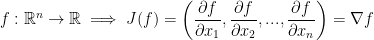
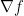

Created Wednesday 24 June 2020
So, we just finished learning about partial derivatives.
Let us begin with some math stuff:

 is known as the gradient of f.
Here is another definition:
In case you weren't sure, i, j, and k are the basis vectors (1, 0, 0), (0, 1, 0), and (0, 0, 1) respectively. Also, e is the natural basis.
We can of course generalize this like so:
Definitions
Let  . We call the Laplacian operator of f denoted as such:
. We call the Laplacian operator of f denoted as such:
∇ is called 'nabla' by the way. The regular triangle is the Laplacian.
We use the Laplacian to solve differential equations of course.
Our professor then writes:

He also writes:
The reason is because we are essentially taking the inner (dot) product of our vector of partial derivatives with itself. If that doesn't make so much sense, observe:
Another Definition
If the function  is solution to the differential equation .
is solution to the differential equation .
From this, we say that f is a harmonic function.
A quick peak at this wikipedia article connected a few dots for myself. Maybe it'll help you too!
Directional Derivative
If in which a is a point and v is a direction we call the directional derivative of f at a in the direction v the following limit:
If you're wondering, t is essentially the amount of movement taking place parallel to v. Hopefully, you noticed the limit above is similar to how we defined derivatives back in calculus 1!
Big Remark!
He writes, "REMARK" in all caps so you know this has to be important.
Everything we just went over for directional derivatives can be condensed to the following:

Any partial is a special case of directional derivative in the direction ei. And as you hopefully remember, ei is the natural basis vectors.
Definition of a Derivative
A derivative or differential of a function:

Let f be a function with U being an open set  such that
such that
We say that f is differentiable at the point iff the following limit exists:
where T is a linear function such that .
Believe it or not, this wasn't created as some stroke of genius by a mathematician (well, I guess it kinda was) but it came about as a generalization of the derivative we all know and love from back in calculus 1.
Continuing on, instead of writing T we write  and we call it the derivative (or differential) of f at x0. By the way, the D stands for 'derivative.'
and we call it the derivative (or differential) of f at x0. By the way, the D stands for 'derivative.'
So then, the derivative of any function between one space to another is a linear function between the two spaces.
Let's explore this a little deeper. So then, we have the following:
This is just the derivative as we remember back in calc1. f'(x0) is essentially the slope of a number.
Going even deeper, we also know we have this:
The above is a linear function from .
Likewise, let us have a linear function L(h) such that .
Only now let us go even further beyond!
So, we have the derivative of a function like so:
We then have this:
Here we have to take the absolute since we don't know if we are increasing or decreasing.
We also have this:

Remember, Df(x0) is the derivative of our function at the given point x.
Continuing on...
The only vector subspaces in  are lines through the origin. For example, y = λx.
are lines through the origin. For example, y = λx.
Properties
Know for the properties:
1)
By the way, Df(x) is a linear function from the  to the vector space.
to the vector space.
Proof:
Now then, observe this:
with the property 
Please note that 0 and 01 is a function here!
We also have this:
with the property just like before.
Lastly, we have this:
with the property
This property tells us that these two functions are linear.
Not only that, this tells us that L(h) and Df(x)(h) must be equal.
As such:
Theorem
Now for a theorem that our professor says is rather strange.
Suppose we have our function  is a linear function.
is a linear function.
Then
He states that whenever you take the derivative of a linear function, you get the function itself? But why??
Proof:
f is a linear function that satisfies:
As such, the limit is also 0.
So then, if the function is a linear function.
If you have a hard time believing this, do you remember the derivative of ex?
Tada! We've come full circle haven't we?
Fundamental Theorem
1)
If  is differentiable at then f is continuous at .
is differentiable at then f is continuous at .
Proof:
f differentiable means that
For that last line, we are adding some zero function at h.
So, if (which should be read as x approaches x0) then the equation we wrote above becomes zero!
Now for the Theorem

Df(x) can be represented by a matrix though! So, that brings us to our theorem:
The representative matrix of  is .
is .
Remember, the J function is for the Jacobian matrix! Also, remember it is a mxn matrix.

Proof:
In turn, we have:
Where
Continuing on...
which is a vector in 
We also have:
And now, more stuff:
Take
From that, we get this:
0(c) is a function by the way!
Also, the is the equivalent to
So, the matrix we have is exactly that. Jacobian.
Examples
Oh lordy that was a lot to take in. I hope everything I wrote down was accurate. I'm definitely struggling to keep up with today's lecture.
Without further ado, let's have 4 minutes of examples to explain everything was just covered in an hour.
Let
By the way, the professor states that he likes to write log when he really means ln... I went ahead and just wrote ln to make things less confusing.
Now we can begin to write out our Jacobian matrix. For simplicity, let us have the following:
Also, Df(x) is a linear function so we ahave to find the Jacobian matrix.
Alright, let's begin!
He doesn't find the derivatives but instead just writes what the final answer should be. It shouldn't be too hard to take a swing at it yourself. It will probably be good practice! So long as the following solution he gave us is correct...
So then, the above is the derivative of our function!
Something cool!
So, let's say you want to know the derivative of at (1, 0, 1). How would you do this? As it turns out, it's very simple! Just multiply it with our Jacobian matrix like so:
{kind=link}
{kind=link}
{kind=link}
{kind=link}
{kind=link}
{kind=link}
{kind=link}
{kind=link}
{kind=link}
{kind=link}
{kind=link}
{kind=link}
{kind=link}
{kind=link}
{kind=link}
{kind=link}
{kind=link}
{kind=link}
{kind=link}
{kind=link}
{kind=link}
{kind=link}
{kind=link}
{kind=link}
{kind=link}
{kind=link}
{kind=link}
{kind=link}
{kind=link}
{kind=link}
{kind=link}
{kind=link}
{kind=link}
{kind=link}
{kind=link}
{kind=link}
{kind=link}
{kind=link}
{kind=link}
{kind=link}
{kind=link}
{kind=link}
{kind=link}
{kind=link}
{kind=link}
{kind=link}
{kind=link}
{kind=link}
{kind=link}
{kind=link}
{kind=link}
{kind=link}
{kind=link}
{kind=link}
{kind=link}
{kind=link}
{kind=link}
{kind=link}